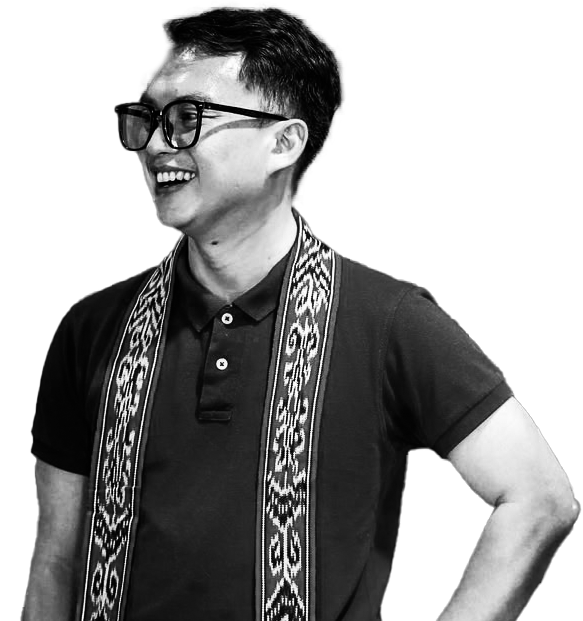

01
13
EPS
EPS
SARAWAK, MALAYSIA · AVAILABLE FOR THE RIGHT STORY
Writer-producer, production executive and editor shaping television, documentary and corporate stories from first idea to final delivery.
SEE CREDITS ↓
Also: Tinta Dari Astana (RTM), PETHEM Documentary (TVS), Penghujung Rindu and PETROSNiaga’s LPG Safety Video. Let’s talk.
I’m Tony Sigan Anak Lapok, a writer-producer and production executive with a hands-on production practice across television drama, documentaries and corporate film.
At Lightcube Studio, I pair creative instinct with clear project management—from concept and scripts through the shoot, edit and broadcast delivery.
Original scripts, treatments, concept development and Malay-English subtitling that gives each project a clear voice.
↘Scheduling, budgeting, resource coordination and on-set assistant direction that keeps the creative moving.
↘Offline editing, DaVinci Resolve, Premiere Pro, After Effects and design support for a polished final delivery.
↘2024 — NOW
2023 — 2024
2022
SIMPLE, COLLABORATIVE, CLEAR
We get clear on the brief, the audience and the story that needs to land.
I shape the script, production plan, visual language and edit into one confident direction.
You get a considered, platform-ready film—prepared for clients, audiences or broadcast.
GOT SOMETHING IN MIND?
FOR THE DOCUMENTARY,
THE DRAMA, OR THE
NEXT BIG SCREEN.